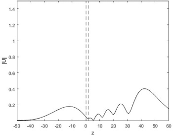

Research and Projects
-

Nonlinear waveguide SSFM numerical simulation
This MATLAB numerical simulation utilizes the Split-Step Fourier Transform (SSFM) algorithm to numerically solve the Nonlinear Schrödinger equation (NLSE) for a TE polarized Gaussian beam propagating through a nonlinear waveguide geometry ... More
-

Reproducing Akhmediev's numerical results
Another MATLAB numerical simulation that uses the SSFM algorithm to numerically solve and simulate the NLSE in a linear-nonlinear geometry. In this case, the algorithm was used to reproduce the numerical results found by ... More
-

Reproducing Moloney's numerical results
The algorithm used for reproducing the results by Akhmediev et al. was adapted to suit the physical parameters and geometry of a study by Gubbels et al. and Moloney (1987) named “Numerical study of soliton emission from a nonlinear waveguide.” Similar to my previous project reproducing ... More